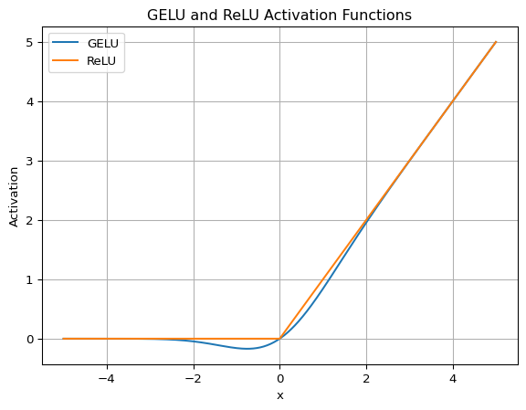

Google’s PaLM and Meta’s LLaMA use SwiGLU to improve the performance of the FFN (position-wise feed-forward network) layers in the Transformer architecture.
SwiGLU is one of the variants of Gated Linear Units (GLU) activation functions explored in the paper GLU Variants Improve Transformer by Noam Shazeer. He was with Google Brain at the time of the paper. He is one of the co-authors of the original Transformer paper.
He is also a significant contributor to Google’s LaMDA, a project led by Daniel De Freitas. In November 2021, Noam Shazeer and Daniel De Freitas co-founded Character.AI, according to his LinkedIn profile. Moreover, LaMDA is the base dialog system of Google’s Bard, rivaling OpenAI’s ChatGPT.
Note: they now (2023) use PaLM 2 (Pathways Language Model 2) as the base for Bard.
He experimented with GLU variants as activation in FFN. He showed some variants produce better perplexities for the language tasks than the previous SOTA (state-of-the-art), like ReLU and GELU activation functions.
This article will explain the GLU variants experimented on in the paper, such as ReGLU, GEGLU, and SwiGLU.
1 FFN with ReLU Activation
Transformer models alternate multi-head attention and FFN (position-wise feed-forward networks) layers. The FFN layers are in the encoder and decoder blocks of the Transformer architecture. For example, the encoder block below consists of a multi-head attention layer and an FFN layer.
In their experiments, they use no bias and call it FFN\(_{\text{ReLU}}\). This simplification follows the approach by the T5 paper, in which Noam Shazeer is one of the co-authors.
By looking at the chart below, we can see that GELU is a smooth approximation of ReLU.
import numpy as npimport matplotlib.pyplot as pltfrom scipy.stats import normdef gelu(x):return x * norm.cdf(x)def relu(x):return np.maximum(0, x)x_values = np.linspace(-5, 5, 500)y_values = gelu(x_values)gelu_values = gelu(x_values)relu_values = relu(x_values)plt.plot(x_values, gelu_values, label='GELU')plt.plot(x_values, relu_values, label='ReLU')plt.title("GELU and ReLU Activation Functions")plt.xlabel("x")plt.ylabel("Activation")plt.grid()plt.legend()plt.show()

It is a non-linear function that is differentiable everywhere.
The FFN with GELU activation becomes: \[
\text{FFN}_{\text{GELU}}(x, W_1, W_2) = \text{GELU}(xW_1) W_2
\]
where \(\text{GELU}(x) = x \Phi(x)\) and \(\Phi(x)\) is the cumulative distribution function of the standard normal distribution.
Note: in the GELU paper, they use approximations of the cumulative distribution function (cdf) of the standard normal distribution for faster computation.
where \(\text{Swish}_\beta(x) = x \sigma(\beta x)\).
Note: they use \(\beta = 1\) in their experiments.
4 GLU and Variants
GLU (Gated Linear Units) is a neural network layer, not an activation function in the strict sense. It is a linear transformation followed by a gating mechanism. The gating mechanism is a sigmoid function that controls the flow of information from the linear transformation.
\[
\text{GLU}(x, W, V, b, c) = \sigma(xW + b) \otimes (xV + c)
\]
where \(\sigma\) is the sigmoid function and \(\otimes\) is the element-wise product. The sigmoid function is the gating mechanism, similar to the gates in LSTM.
We can define GLU variants using other activation functions than the sigmoid function.
4.1 Bilinear activation
The bilinear layer is a GLU variant that omits the sigmoid function. It is a bilinear transformation followed by an element-wise product.
\[
\text{Bilinear}(x, W, V, b, c) = (xW + b) \otimes (xV + c)
\]
4.2 ReGLU activation
ReGLU is a GLU variant that uses ReLU as the activation function.
\[
\text{ReGLU}(x, W, V, b, c) = \text{ReLU}(xW + b) \otimes (xV + c)
\]
4.3 GEGLU activation
GEGLU is a GLU variant that uses GELU as the activation function.
\[
\text{GEGLU}(x, W, V, b, c) = \text{GELU}(xW + b) \otimes (xV + c)
\]
4.4 SwiGLU activation
SwiGLU is a GLU variant that uses Swish as the activation function.
\[
\text{SwiGLU}(x,W, V, b, c) = \text{Swish}_1(xW + b) \otimes (xV + c)
\]
5 FFN and GLU variants
In the paper, they use the GLU variants without bias.
\[
\begin{aligned}
\text{GLU}(x, W, V) &= \sigma(xW) \otimes xV \\\\
\text{Bilinear}(x, W, V) &= xW \otimes xV \\\\
\text{ReGLU}(x, W, V) &= \text{ReLU}(xW) \otimes xV \\\\
\text{GEGLU}(x, W, V) &= \text{GELU}(xW) \otimes xV \\\\
\text{SwiGLU}(x, W, V) &= \text{Swish}_1(xW) \otimes xV
\end{aligned}
\]
All these FFN layers have three weight matrices, \(W\), \(V\), and \(W_2\), whereas the original FFN layer has two weight matrices, \(W_1\) and \(W_2\).
To keep the number of parameters and the amount of the computation the same, they reduce the size of hidden units \(d_{ff}\) (the second dimension of \(W\) and \(V\) and the first dimension of \(W_2\)) by a factor of \(\frac{2}{3}\). So, it makes the number of parameters in the three weight matrices comparable to the two-weight matrix version.
6 Experiments
They use T5 (Text-to-Text Transfer Transformer) with the various FFN layers and compare the results with the original FFN layer.
The encoder and decoder each consist of 12 layers.
The embedding size is \(d_{model} = 768\).
12 attention heads with the key and query size of \(d_k = d_v = 64\) (so, \(d_{model} = 768 = 12 \times 64\)).
\(d_{ff} = 3072\) for the original FFN layer
\(d_{ff} = 2048\) for the GLU variants
6.1 Pre-training Results
Table 1 shows the results of pre-training. The GEGLU and SwiGLU variants produce the best perplexities and outperform the original FFN layer.
Note: the pre-training is identical to the one in the T5 paper, except that there is no dropout during pre-training as it produces better results.
6.2 Fine-tuning Results
Table 2 shows the results of fine-tuning, benchmarked on GLUE. GLU variants outperform the original FFN layer on most tasks. As per the T5 paper, they use the dropout during fine-tuning.
The bottom two rows of the table show the results from the T5 paper in that the model is identical to \(\text{FFN}_{\text{ReLU}}\) except for the use of dropout during pre-training. It shows that the use of dropout during pre-training is detrimental to performance. The last row is the inter-run standard deviations of the results.
Table 3 shows the results of fine-tuning, benchmarked on SuperGLUE. The GLU variants outperform the original FFN layer on most tasks.
GLU variants outperform the original FFN layer on most tasks without any apparent computational drawbacks.
It is probably due to the additional gating mechanism of GLU variants that allows the model to learn more complex functions and achieve better performance. However, the paper’s author does not explain the reason for the better performance.
We offer no explanation as to why these architectures seem to work; we attribute their success, as all else, to divine benevolence. Source: GLU Variants Improve Transformer
The empirical results show that the FFNs with the GLU variants are better than the original FFN layer. As such, Google’s PaLM and Meta’s LLaMA use the SwiGLU variant instead of ReLU, GELU, and Swish activations.